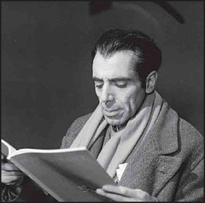

Страницы авторов "Тёмного леса"
Пишите нам! temnyjles@narod.ru
Личность французского писателя Артюра Адамова для кисловодского краеведения остается новой и практически не исследованной. 23 августа исполняется 105 лет со дня рождения этого прозаика, драматурга и переводчика, - армянина, родившегося в России. Его имя внесено в Большую Советскую энциклопедию, но о самом Адамове известно крайне мало. Даже франкоязычной литературы о нём немного.
В России имя писателя еще менее известно и ему не посвящено ни одной книги на русском языке.
Из скупых и кратких статей мы знаем, что Артюр Адамов родился 23 августа 1908 года в городе Кисловодске в семье нефтепромышленника. До отъезда в Европу будущего писателя звали Арутюн (Артур) Суренович Адамов (Адамян).
До сегодняшнего дня остается неизвестным, была ли у Адамовых какая-либо недвижимость в Кисловодске. Вероятнее всего обеспеченная семья просто отдыхала здесь в летний сезон, сняв квартиру или дачу. По имеющейся информации отец Адамова происходил из Карабаха, а точнее - из уездного города Шуша Елизаветпольской губернии. А в Тифлисе (тогдашнем административном центре всего Кавказа) жили и владели недвижимостью близкие родственники Адамовых. Известен "Адамовский дом" в Тбилисском квартале Кукиа (ныне Дидубе-Чугурети) на улице Д. Агмашенебели, принадлежавший шушинскому нефтепромышленнику Никите Артемьевичу Адамову.
Будущий литератор провел в России только ранние детские годы. Уже в 1914 году семья покинула страну и перебралась в Женеву. В 1922 году - в Германию (Майнц), а в 1924 году Адамовы переехали на жительство в Париж. Отъезд семьи из России объясняют тем, что отец будущего писателя и драматурга был заядлым игроком и проиграл почти все свое состояние. Не исключено, что он таким образом мог спасаться от выплаты долгов. Несмотря на пошатнувшееся материальное благополучие семьи, Артюр получал образование и в Швейцарии и в Германии и во Франции. Ненависть к отцу-игроку (покончившему с собой в 1933 году), пуританская строгость воспитания и образования привели к формированию ранимой, замкнутой и склонной к депрессивным состояниям личности Артюра Адамова. В юности Артюр увлекался стихосложением в модном тогда духе сюрреализма, сблизился с известными представителями этого направления: АнтоненомАр-то, Альберто Джакометти и другими, издавал журнал "Разрыв". Адамов активно участвовал в литературной и общественной жизни Парижа до конца 1930-х годов, в демонстрациях за освобождение известных рабочих-анархистов Н. Сакко и Б. Ванцетти, которые по странному совпадению были казнены в день, когда Артюру исполнилось 19 лет.
Душевные переживания и потрясения, связанные с острым восприятием действительности, а также самоубийством отца привели к нервному срыву у Адамова, произошедшему в 1938 году. Спустя несколько лет Артюр Адамов выступил с резкими высказываниями против прогитлеровского "правительства Виши", за что его в 1942 году заключили в концлагерь Аржелес, в котором он пробыл до конца войны. Пребывание в Аржелесе нашло отражение в повести "Признание" (1946), в которой Адамов выразил испытанные им чувства унижения, беспомощности и безысходности.
1950-е годы оказались наиболее плодотворными для Адамова в творческом плане. Тогда были опубликованы драмы "Пародия" (1950), "Вторжение" (1950), пьесы "Большой и малый манёвр" (1953), "Все против всех" (1953), фарс "Паоло Паоли" (1957), скетч "Интимность" (1958) и многие другие произведения. Адамов, наряду с Эженом Ионеско и Сэмьюэлом Беккетом, признан одним из основоположников такого направления в искусстве как "театр абсурда". Его пьесы ставились в лучших театрах Франции. Адамов занимался переводами на французский язык произведений М. Горького, Н.В. Гоголя, А.П. Чехова и других. "Мещан" М. Горького в его переводе неоднократно ставила в своем театре "Картушри" известная режиссер Ариана Мнушкина. Адамову удалось также адаптировать для сценических постановок "Мертвые души" Н.В. Гоголя.
В общественной жизни Адамов проявлял себя как убежденный противник войны. Он вошел в число французских интеллектуалов, подписавших в 1960 году "Манифест 121" против войны в Алжире. Подписание манифеста сблизило его с коммунистами. Позднее, Адамов также принимал участие в митингах против войны во Вьетнаме.
Среди произведений Адамова 1960-х годов следует назвать антирасистскую гротескную пьесу "Политика отбросов" (1962), буффонаду "Умеренный" (1968), драму "Сверх меры" (1968).
Признание вклада Адамова в литературу выразилось в том, что его включили в состав Национального комитета писателей Франции, а также пригласили в 1964 году в США для чтения лекций о современном театре и творчестве Гюстава Флобера и Поля Валери. Тогда же был опубликован сборник работ Адамова "Здесь и сейчас" со статьями о новаторской роли А.П. Чехова и Бертольда Брехта в театральном искусстве. В 1968 году вышла книга воспоминаний Артюра Адамова "Человек и дитя".
Успех и признание не помогли Адамову преодолеть губительное для него депрессивное состояние. Это привело к тому, что с середины 1960-х годов он злоупотреблял алкоголем, а затем и наркотиками, лечился в психиатрических клиниках. После мучительных исканий и раздумий, Адамов пришел к выводу, что человеческая жизнь на самом деле вовсе не абсурдна, как он полагал, а просто трудна. 16 марта 1970 года в Париже писатель покончил с собой, приняв смертельную дозу снотворного. Похоронили Артюра Адамова на кладбище Иври-сюр-Сен в департаменте Валь-де-Марн. Супруга - журналистка и психоаналитик, сотрудник редакции журнала "Французский Институт психоанализа" Жаклин Отрюссо скончалась в 2004 году, немного не дожив до 82 лет. А несколькими годами ранее, в 2000 году, был снесен надгробный памятник Адамову, поскольку истек срок концессии. В то же время само захоронение пока сохраняется, поскольку на Иври-сюр-Сен покоится не так много знаменитых людей. В настоящее время могила французского писателя, драматурга и переводчика Артюра Адамова отмечена только обломком надгробного камня с его именем.
Имя нашего французского земляка - это новая и малоисследованная страница в литературной летописи Кисловодска. Поэтому дальнейшее изучение материалов о жизни Артюра Адамова, особенно на иностранных языках, несомненно, пополнит картотеку персоналий новыми ценными сведениями о малоизвестном в России писателе, драматурге и переводчике.
|  |
| А. Адамов. |
Вячеслав Яновский. Неакадемические сочинения